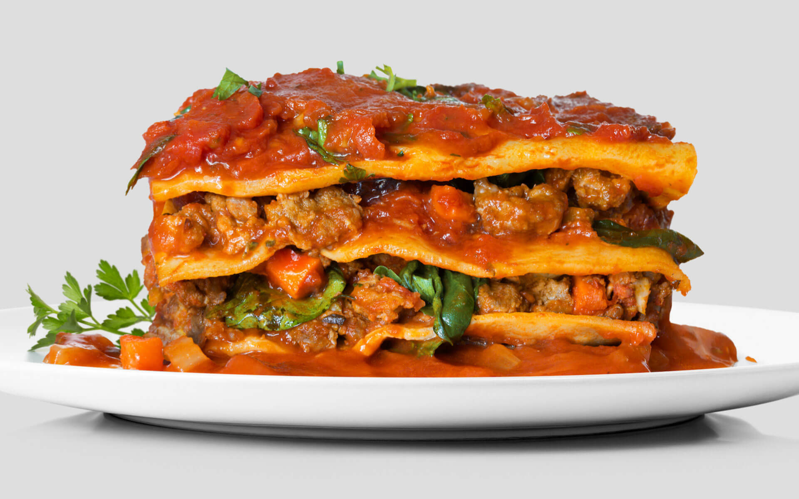

Lasagna

Description
A baked Italian dish consisting of wide strips of pasta cooked and layered
with meat or vegetables, cheese, and tomato sauce.
Ingredients
For the Ricotta Filling
- 4 tb olive oil
- 1 lb fresh spinach
- Salt
- 2 lbs of whole milk
- 2 cups of provolone cheese
- 3 oz grated parmesan
- 20 leaves of basil, finely chopped
- 2 tb italian parsley, finely chopped
- 1 tsp thyme, finely chopped
For the Bechamel
- 1/2 cup unsalted butter(1 stick)
- 1/2 cup all-purpose flour
- 4 cups whole milk
- Salt
- Pepper
- Ground nutmeg (optional)
For the Assembled Lasagna
- 4 1/2 cups marinara sauce
- Salt
- 2 (9 oz) packages dried lasagna noodles
- 1 1/2 oz grated parmesan
- 1/2 cup asiago
- 3 oz grated mozzarella
Steps
-
Prepare the ricotta filling: If using fresh spinach, set a large skillet
over high heat. (If using thawed frozen spinach, skip to Step 2.) When
hot, add 2 tablespoons oil and half the fresh spinach. Season with a
pinch of salt and sauté to wilt. Cook until stems are tender, about 3
minutes. Transfer to a baking sheet and allow to cool in a single layer.
Repeat with remaining spinach.
-
While spinach cools, combine ricotta, mozzarella, Parmesan, basil and a
generous pinch of salt in a large bowl.
-
Taking handfuls of the cooled or thawed spinach, squeeze out as much
water as possible, then chop finely and add to cheese mixture. Mix
thoroughly, then taste and adjust seasoning for salt. (Filling makes
about 6 cups.) Cover and set aside until ready to assemble lasagna.
(Ricotta filling can be made 1 day in advance and refrigerated. Bring to
room temperature before assembling lasagna.)
-
Prepare the béchamel: Set a large, heavy-bottomed pot or Dutch oven over
medium heat and add butter. Once butter has melted, whisk in flour,
reduce heat to very low and cook for about 15 minutes, stirring
regularly to prevent browning. After the mixture foams a bit, it will
visibly transform — the butter will separate, the bubbles will reduce in
size, and the mixture will look like freshly wet fine sand. Whisking
vigorously, slowly pour in milk. Increase heat to medium and whisk until
the mixture thickens, about 2 minutes. Add salt, pepper and nutmeg (if
using) to taste.
-
Return heat to low. Continue cooking, whisking regularly, for 10 to 15
minutes until the sauce is thick and smooth, with no raw flour flavor.
Taste and adjust seasoning with salt. If béchamel is lumpy, strain
through a fine sieve or purée with an immersion blender. (You’ll have
about 3½ cups.) Press a piece of parchment or plastic against the
surface of the sauce to prevent a skin from forming and set aside until
ready to assemble lasagna. (Béchamel can be made up to 1 day in advance,
covered directly and refrigerated. Return to room temperature before
using.)
-
Prepare the lasagna: Position the highest rack in the oven so that it
sits about 6 inches below the top. Heat oven to 400 degrees.
-
If tomato sauce, béchamel and ricotta filling are cold, bring to room
temperature or warm them as needed.
-
Set a large pot of water over high heat. Cover and bring to a boil. Set
a large colander in a baking dish and place near stove.
-
Season the boiling water generously with salt until it tastes like sea
water. Carefully lay one sheet of pasta on the water’s surface. Let it
be completely immersed in the boiling water, using a slotted spoon to
gently it push down if needed, before adding the next sheet. Add two
more pasta sheets in this way and cook for about 2 minutes, or until
light in color, floppy in texture and completely cooked through. If
pasta bubbles above the water's surface, use a slotted spoon to
encourage it back in. Use a sieve to gently remove pasta from the water
and into the prepared colander. Rinse under cold water until cool enough
to handle, then begin assembly. Continue cooking, draining and rinsing
pasta two or three sheets at a time as you assemble lasagna.
-
Spoon about ¾ cup béchamel into a 9-by-13-inch metal, glass or ceramic
baking pan, and use a rubber spatula or your hands to generously coat
bottom and sides of pan with sauce.
-
Gently squeezing any remaining water from the pasta, use two or three
sheets to entirely cover the bottom of the pan with minimal overlap, and
leave ends hanging over sides. (They’ll be helpful for sealing the top.)
All four sides need not have overhang; two is plenty.
-
Crumble about ⅓ of the ricotta mixture evenly over pasta to create
foundation, then layer with sheets of pasta from edge to edge of pan.
Use kitchen shears to help trim pasta to appropriate size and avoid
overlap.
-
Spread about ⅓ of the tomato sauce over next layer and cover with pasta.
-
Spread about 1 cup béchamel evenly over next layer, sprinkle with ¼ cup
grated Parmesan, and cover with pasta.
-
Repeat with remaining layers: ricotta, tomato sauce, béchamel and
Parmesan, ricotta, tomato sauce, béchamel and Parmesan, following each
with a layer of pasta. (If using thicker noodles, you might not be able
to fit 8 layers of noodles in the pan. If using store-bought or dried
pasta, you can skip the noodle layer between the ricotta and tomato
sauce as needed to prevent the lasagna from stretching higher than the
top of the pan.)
-
For the top, fold overhanging pasta over a whole sheet to create a
sealed pasta layer, then spread with remaining béchamel. Gently cover
lasagna with a piece of parchment and wrap tightly with foil. Place onto
a baking sheet to catch any overflow and bake on prepared rack.
-
After 40 minutes, pull lasagna from oven and carefully remove foil and
parchment. Sprinkle with grated mozzarella and return to oven until
golden brown and bubbling on surface, about 20 minutes.
-
Allow to cool for at least 15 minutes before slicing and serving.
Leftover lasagna can be wrapped and refrigerated for up to 4 days. To
freeze, bake 30 minutes but do not brown, then cool, and freeze for up
to 4 weeks. Defrost, then sprinkle with mozzarella and bake uncovered at
400 degrees for 25 to 30 minutes until golden brown and bubbling on
surface.